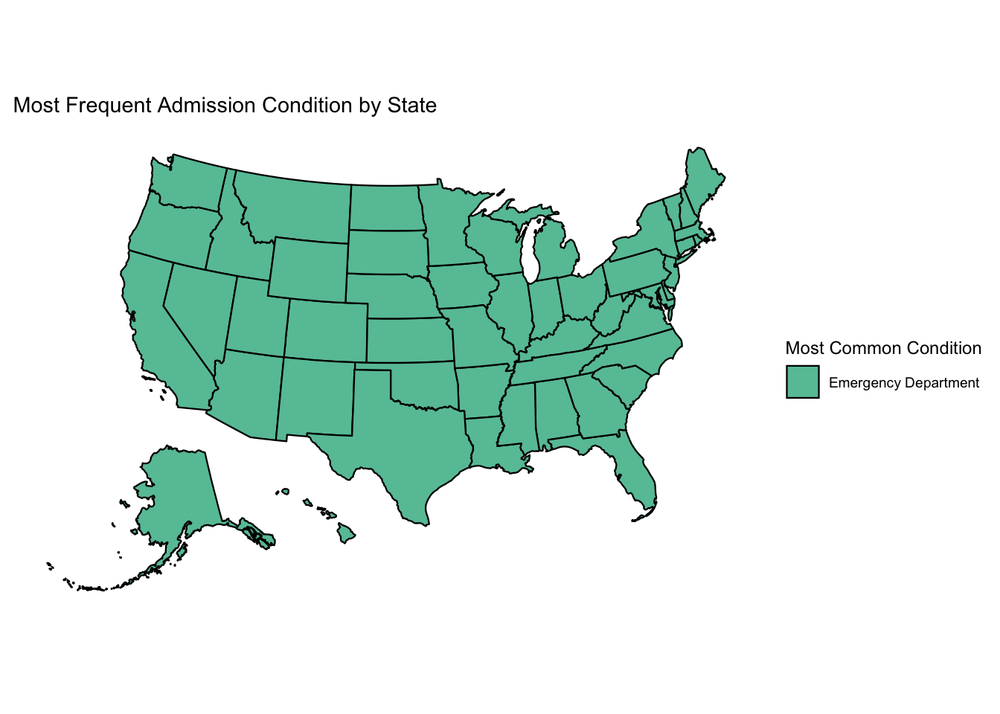
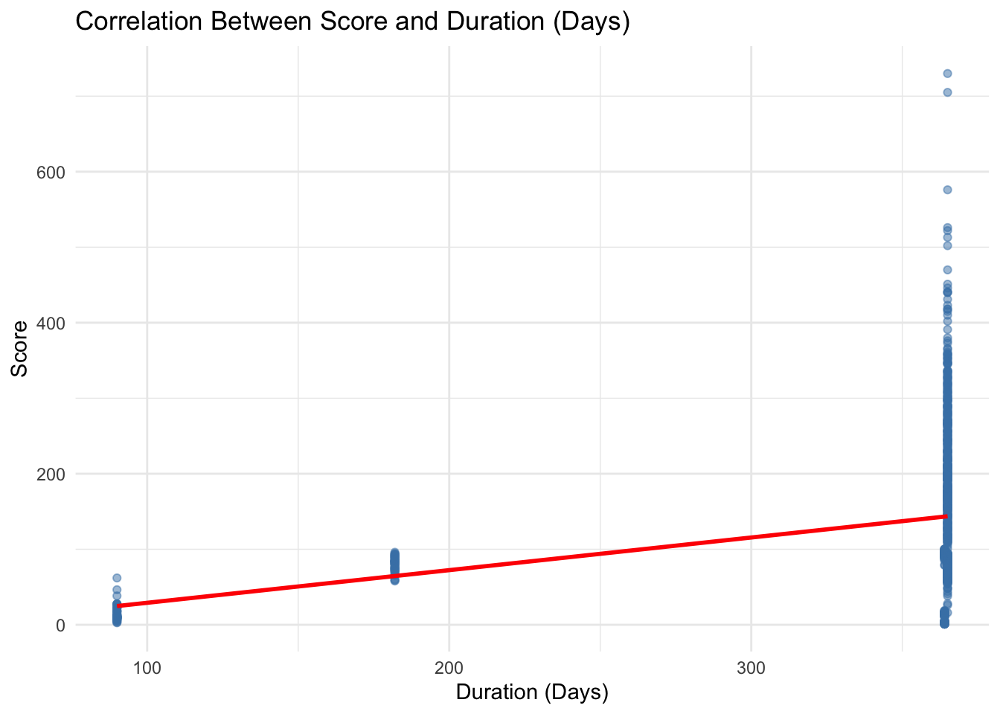
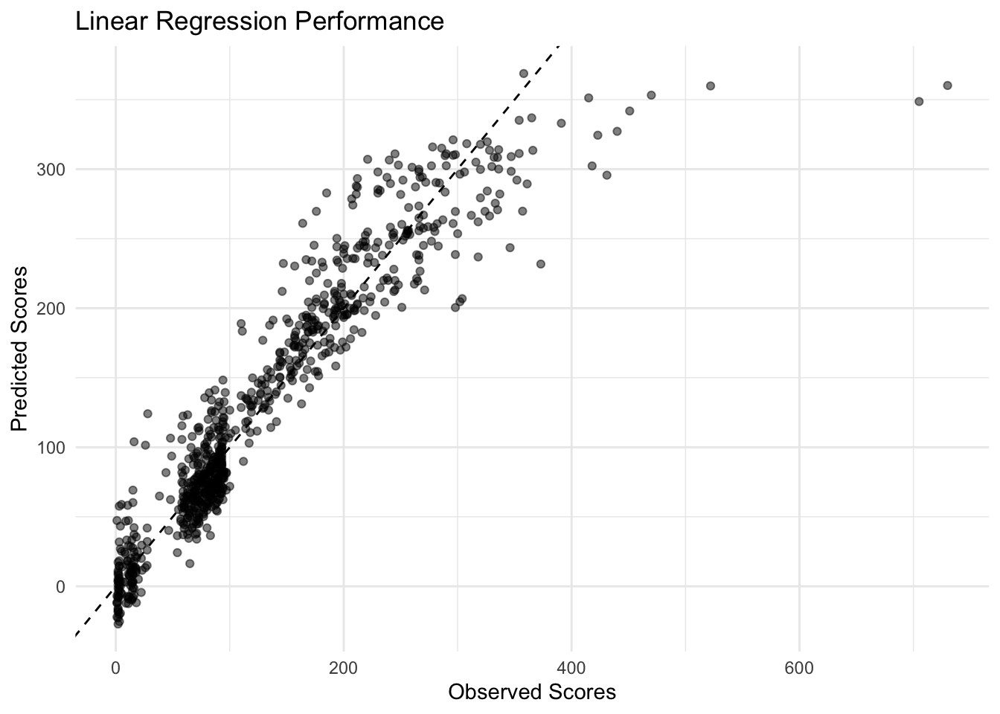
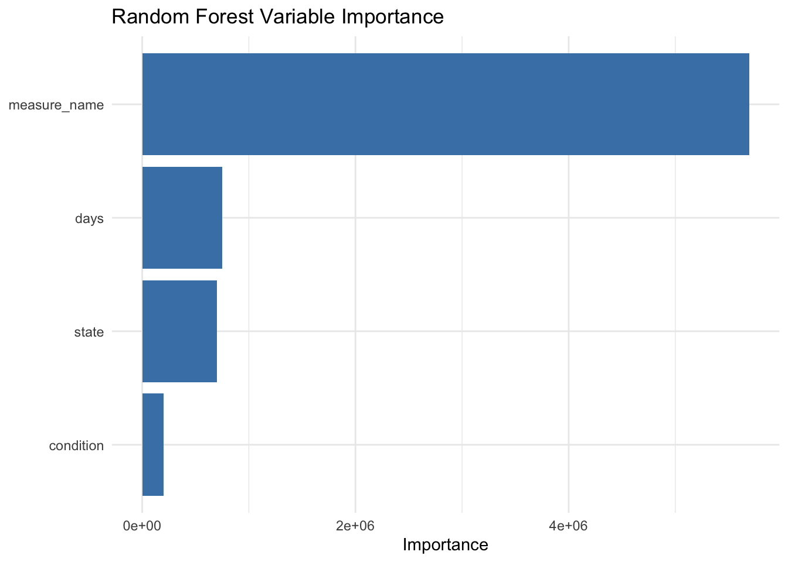
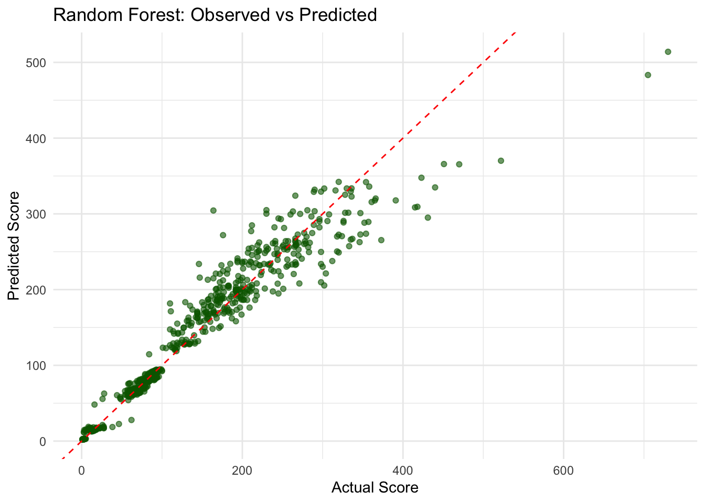
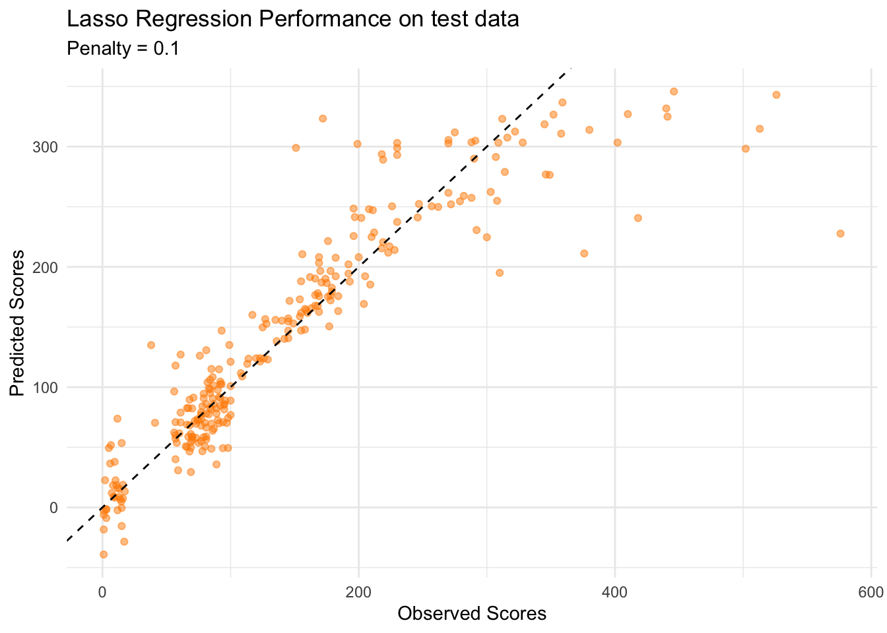

Quantitattive metrics of healthcare quality offer vital information about hospital performance and patient outcomes.The care_state dataset from TidyTuesday (April 8), which includes state-level hospital care quality metrics for various medical diseases, is analysed in this exercise. The dataset will provide an understanding of healthcare performance in the US by incorporating characteristics like patient scores, admission circumstances, measurement kinds, and time periods.
2 Loading the libraries
library(here)
here() starts at /Users/freebird/Documents/GitHub/prasangapaudel-MADA-portfolio
library(dplyr)
Attaching package: 'dplyr'
The following objects are masked from 'package:stats':
filter, lag
The following objects are masked from 'package:base':
intersect, setdiff, setequal, union
3 Importing dataset
We will import the dataset directly from Github using readr.
Rows: 1232 Columns: 8
── Column specification ────────────────────────────────────────────────────────
Delimiter: ","
chr (5): state, condition, measure_id, measure_name, footnote
dbl (1): score
date (2): start_date, end_date
ℹ Use `spec()` to retrieve the full column specification for this data.
ℹ Specify the column types or set `show_col_types = FALSE` to quiet this message.
Now, we will look at the uppermost observations from tha dataset.
head(care_state)
# A tibble: 6 × 8
state condition measure_id measure_name score footnote start_date end_date
<chr> <chr> <chr> <chr> <dbl> <chr> <date> <date>
1 AK Healthcare… HCP_COVID… Percentage … 7.3 <NA> 2024-01-01 2024-03-31
2 AK Healthcare… IMM_3 Healthcare … 80 <NA> 2023-10-01 2024-03-31
3 AK Emergency … OP_18b Average (me… 140 25, 26 2023-04-01 2024-03-31
4 AK Emergency … OP_18b_HI… Average tim… 157 25, 26 2023-04-01 2024-03-31
5 AK Emergency … OP_18b_LO… Average tim… 136 25, 26 2023-04-01 2024-03-31
6 AK Emergency … OP_18b_ME… Average tim… 136 25, 26 2023-04-01 2024-03-31
The variables are coded in the correct way. But we will modify them according to our needs if required.
4 Exploratory Data Analysis
The dates look interesting, we might be able to use the duration from start to end as an information in our research. We will first look if there are multiple start dates and end dates or if all the dates are same.
#counting the occurrences of each start_datecare_state %>%count(start_date, name ="frequency") %>%arrange(desc(frequency)) %>%# sorting by most frequentprint(n =Inf) #showing all rows
We can observe that there are only four start dates although some of them have very high frequency and some of them have a low frequency.
#counting the occurrences of each end_datecare_state %>%count(end_date, name ="frequency") %>%arrange(desc(frequency)) %>%#sorting by most frequentprint(n =Inf) #showing all rows
# A tibble: 2 × 2
end_date frequency
<date> <int>
1 2024-03-31 1008
2 2023-12-31 224
There are only two end dates.
So there is not much information in this variables for exploration.
4.1 Checking the most frequent condition in each state
Now we will see which of the condition is most frequent in each of the state and if there is a pattern among the states.
library(tidyverse)
── Attaching core tidyverse packages ──────────────────────── tidyverse 2.0.0 ──
✔ forcats 1.0.1 ✔ readr 2.1.6
✔ ggplot2 4.0.1 ✔ stringr 1.6.0
✔ lubridate 1.9.4 ✔ tibble 3.3.0
✔ purrr 1.2.0 ✔ tidyr 1.3.1
── Conflicts ────────────────────────────────────────── tidyverse_conflicts() ──
✖ dplyr::filter() masks stats::filter()
✖ dplyr::lag() masks stats::lag()
ℹ Use the conflicted package (<http://conflicted.r-lib.org/>) to force all conflicts to become errors
install.packages("usmap")
The downloaded binary packages are in
/var/folders/yx/x_hgd5y52px8zm3krl7r6hb40000gn/T//Rtmp7ud1uj/downloaded_packages
library(usmap)#finding most frequent condition per statetop_conditions <- care_state %>%count(state, condition) %>%group_by(state) %>%slice_max(n, n =1) %>%ungroup()#creating basic mapplot_usmap(data = top_conditions, values ="condition") +scale_fill_brewer(palette ="Set2", name ="Most Common Condition",na.value ="gray") +labs(title ="Most Frequent Admission Condition by State") +theme(legend.position ="right")

We can see that for every state Emergency is the most frequent condition.
4.2 Checking the frequencies of different measures.
Now, we will observe the freqency of different values under the variable measure_name.
#getting frequency counts for measure_namemeasure_counts <- care_state %>%count(measure_name, sort =TRUE) #sorting by most frequent#showing the full tableprint(measure_counts, n =Inf) #n= all rows
# A tibble: 21 × 2
measure_name n
<chr> <int>
1 Average time patients spent in the emergency department before being s… 112
2 Average (median) time patients spent in the emergency department befor… 56
3 Average (median) time patients spent in the emergency department befor… 56
4 Average time patients spent in the emergency department before being s… 56
5 Average time patients spent in the emergency department before being s… 56
6 Average time patients spent in the emergency department before leaving… 56
7 Average time patients spent in the emergency department before leaving… 56
8 Average time patients spent in the emergency department before leaving… 56
9 Average time patients spent in the emergency department before leaving… 56
10 Healthcare workers given influenza vaccination Higher percentages are … 56
11 Percentage of healthcare personnel who are up to date with COVID-19 va… 56
12 Percentage of patients receiving appropriate recommendation for follow… 56
13 Percentage of patients who came to the emergency department with strok… 56
14 Percentage of patients who had cataract surgery and had improvement in… 56
15 Percentage of patients who left the emergency department before being … 56
16 Percentage of patients who received appropriate care for severe sepsis… 56
17 Safe Use of Opioids - Concurrent Prescribing 56
18 Septic Shock 3-Hour Bundle 56
19 Septic Shock 6-Hour Bundle 56
20 Severe Sepsis 3-Hour Bundle 56
21 Severe Sepsis 6-Hour Bundle 56
We can observe that all the unique values have 56 observations, except the first value which has double observations.
4.3 Average time patients spent in the emergency department before being sent home
Creating a dataset to plot “Average time patients spent in the emergency department before being sent home” across states.
library(tidyverse)#creating filtered dataframeavgtime <- care_state %>%filter(str_detect(measure_name, regex("Average time patients spent in the emergency department before being sent home", ignore_case =TRUE)))
Plotting the “Average time patients spent in the emergency department before being sent home” across states.
library(tidyverse)library(usmap)#calculating average time by statestate_avg_time <- avgtime %>%group_by(state) %>%summarise(average_time_spent =mean(score, na.rm =TRUE)) %>%ungroup()#creating the map visualizationplot_usmap(data = state_avg_time, values ="average_time_spent", color ="white") +scale_fill_viridis_c(name ="Average Time (minutes)", option ="plasma",direction =-1,na.value ="grey90" ) +labs(title ="Average ER Wait Time Before Discharge",subtitle ="Time spent in emergency department before being sent home" ) +theme(legend.position ="right",plot.title =element_text(hjust =0.5, face ="bold"),plot.subtitle =element_text(hjust =0.5) )
We can observe that there is variation across states with central US states showing a low time spent in emergency department before being sent home.
4.4 Influenza Vaccination Rates Among Healthcare Workers across states.
We can observe that medical condition and scores are also related to each other.
library(ggplot2)#days to numericcare_state <- care_state %>%mutate(days =as.numeric(end_date - start_date))#creatig the plot days vs scoreggplot(care_state, aes(x = days, y = score)) +geom_point(alpha =0.5, color ="steelblue") +geom_smooth(method ="lm", color ="red", se =FALSE) +labs(title ="Correlation Between Score and Duration (Days)",x ="Duration (Days)", y ="Score") +theme_minimal()
`geom_smooth()` using formula = 'y ~ x'
Warning: Removed 155 rows containing non-finite outside the scale range
(`stat_smooth()`).
Warning: Removed 155 rows containing missing values or values outside the scale range
(`geom_point()`).

The duration days also show some relation with the score.
5 Hypothesis
We observed that there is a significant relation between states and scores. Also, we observed that days, measure name and conditions also show some relation with the score.
We hypothesize that the factors “measure name” “days”, “state” and “condition” influence the score.
6 Analysis
We observed that the start date and end dates do not vary much across the observations and are quite similar. There are four categories of start date and two categories of end date. We will create a variable “days” using the start date and the end date.
#performing the 75/25 splitset.seed(123) #for reproducibilitydata_split <-initial_split(data, prop =3/4)#creating the training and train setstrain_data <-training(data_split)test_data <-testing(data_split)
We will now use “days”, “state”, “condition”, “measure_name” to predict the “score”. We will use “Regression”, “Lasso” and “Random Forest” models in the next sections.
6.1 Regression
In this setion, we will perform a linear reression analysis. Although it is not a good idea to use variables with too many categories, but in this dataset the variables are too complex to categorize into smaller groups, so will proceed as it is.
library(tidymodels)#fitting linear regressionlm_fit <-linear_reg() %>%set_engine("lm") %>%fit(score ~ days + state + condition + measure_name, data = train_data)#getting model summarytidy(lm_fit) %>%arrange(p.value) # Show most significant predictors first
# A tibble: 78 × 5
term estimate std.error statistic p.value
<chr> <dbl> <dbl> <dbl> <dbl>
1 days 157. 8.51 18.5 5.14e-63
2 (Intercept) -57216. 3096. -18.5 6.57e-63
3 conditionHealthcare Personnel Vaccinat… 43052. 2331. 18.5 7.39e-63
4 measure_nameHealthcare workers given i… -14417. 783. -18.4 1.38e-62
5 measure_nameAverage time patients spen… 153. 8.98 17.0 7.93e-55
6 measure_nameAverage time patients spen… 144. 9.19 15.7 6.28e-48
7 measure_nameAverage time patients spen… 97.8 8.70 11.2 3.43e-27
8 measure_nameAverage (median) time pati… 95.1 8.63 11.0 3.27e-26
9 measure_namePercentage of patients who… -92.9 8.88 -10.5 6.14e-24
10 conditionSepsis Care -147. 19.7 -7.47 2.30e-13
# ℹ 68 more rows
# A tibble: 3 × 3
.metric .estimator .estimate
<chr> <chr> <dbl>
1 rmse standard 34.9
2 rsq standard 0.876
3 mae standard 21.9
# Observed vs Predicted plotggplot(train_results, aes(x = score, y = .pred)) +geom_point(alpha =0.5) +geom_abline(slope =1, linetype ="dashed") +labs(title ="Linear Regression Performance",x ="Observed Scores", y ="Predicted Scores") +theme_minimal()

We can observe that the RMSE value is 34.9 and the adjusted-R-square value is 0.876. The observed-predicted plot also shows a good fit for the datapoints.
The following objects are masked from 'package:tidyr':
expand, pack, unpack
Loaded glmnet 4.1-10
#setting up Lasso model specificationlasso_spec <-linear_reg(penalty =0.1, #Regularization strength mixture =1# 1 = Lasso) %>%set_engine("glmnet")#fitting Lasso modellasso_fit <- lasso_spec %>%fit(score ~ days + state + condition + measure_name, data = train_data)# coefficients (non-zero ones only)tidy(lasso_fit) %>%filter(estimate !=0) %>%arrange(desc(abs(estimate)))
# A tibble: 73 × 3
term estimate penalty
<chr> <dbl> <dbl>
1 measure_namePercentage of patients who left the emergency d… -159. 0.1
2 measure_nameAverage time patients spent in the emergency de… 151. 0.1
3 measure_nameAverage time patients spent in the emergency de… 142. 0.1
4 measure_nameAverage time patients spent in the emergency de… 95.7 0.1
5 measure_namePercentage of patients who came to the emergenc… -93.7 0.1
6 measure_nameAverage (median) time patients spent in the eme… 93.2 0.1
7 conditionEmergency Department 80.4 0.1
8 (Intercept) 68.3 0.1
9 conditionElectronic Clinical Quality Measure -66.8 0.1
10 stateRI 61.8 0.1
# ℹ 63 more rows
# A tibble: 3 × 3
.metric .estimator .estimate
<chr> <chr> <dbl>
1 rmse standard 35.0
2 rsq standard 0.875
3 mae standard 21.7
#Observed vs Predicted plotggplot(train_results, aes(x = score, y = .pred)) +geom_point(alpha =0.5, color ="darkorange") +geom_abline(slope =1, linetype ="dashed") +labs(title ="Lasso Regression Performance",subtitle =paste("Penalty =", lasso_fit$spec$args$penalty),x ="Observed Scores", y ="Predicted Scores") +theme_minimal()
We can observe a RMSE value of 35, which is smaller than what we observed for the OLS model. The R-squared value is 0.875 which is quite simillar to the regression model. The observed-predicted plot also shows a good fit as observed for the regression model.
6.3 Random Forest
library(tidymodels)library(ranger) # random forest#setting up and fit Random Forestrf_spec <-rand_forest(mtry =3, #trees =500,min_n =5) %>%set_engine("ranger", importance ="impurity") %>%set_mode("regression")rf_fit <- rf_spec %>%fit(score ~ days + state + condition + measure_name, data = train_data)#extracting variable importance importance_df <- rf_fit$fit$variable.importance %>%enframe(name ="variable", value ="importance") %>%arrange(desc(importance))#plotting importance ggplot(importance_df, aes(x =reorder(variable, importance), y = importance)) +geom_col(fill ="steelblue") +coord_flip() +labs(x =NULL, y ="Importance", title ="Random Forest Variable Importance") +theme_minimal()

The random forest model shows a relatively high importance for measure_name, which makes sense.
# A tibble: 3 × 4
model rmse rsq mae
<chr> <dbl> <dbl> <dbl>
1 linear_reg 34.9 0.876 21.9
2 lasso 35.0 0.875 21.7
3 random_forest 26.6 0.929 14.0
We can observe that the RMSE of a random forest model is 27.06 while the R-square is 0.927. If we compare the three models, the Random Forest model has the lowest RMSE and the highest R-squared value. Thus RF performs the best.
# Observed vs Predicted plotggplot(rf_results, aes(x = score, y = .pred)) +geom_point(alpha =0.6, color ="darkgreen") +geom_abline(slope =1, linetype ="dashed", color ="red") +labs(title ="Random Forest: Observed vs Predicted",x ="Actual Score", y ="Predicted Score") +theme_minimal()

We can observe that the random forest model shows a very closer difference between the observed and the predicted. Hence, it is a better model.
7 CV approach
we will now use a Cross-validation approach to test our results.
#creating CV folds from training data (10-fold by default)set.seed(123)cv_folds <-vfold_cv(train_data, v =5) # 5-fold CV#defining recipe (preprocessing)model_recipe <-recipe(score ~ days + state + condition + measure_name, data = train_data) %>%step_dummy(all_nominal_predictors()) %>%# Convert factors to dummy variablesstep_normalize(all_numeric_predictors()) # Center/scale numeric predictors#model specifications# Linear Regressionlm_spec <-linear_reg() %>%set_engine("lm")# Lasso Regressionlasso_spec <-linear_reg(penalty =0.1, mixture =1) %>%set_engine("glmnet")# Random Forestrf_spec <-rand_forest(mtry =3, trees =500, min_n =5) %>%set_engine("ranger") %>%set_mode("regression")# Workflowslm_wf <-workflow() %>%add_recipe(model_recipe) %>%add_model(lm_spec)lasso_wf <-workflow() %>%add_recipe(model_recipe) %>%add_model(lasso_spec)rf_wf <-workflow() %>%add_recipe(model_recipe) %>%add_model(rf_spec)#fitting Models with CVlm_res <-fit_resamples( lm_wf,resamples = cv_folds,metrics =metric_set(rmse, rsq, mae))
→ A | warning: ! The following columns have zero variance so scaling cannot be used:
state_AS, state_GU, state_MP, and state_VI.
ℹ Consider using ?step_zv (`?recipes::step_zv()`) to remove those columns
before normalizing.
There were issues with some computations A: x1
→ B | warning: prediction from rank-deficient fit; consider predict(., rankdeficient="NA")
There were issues with some computations A: x1
There were issues with some computations A: x10 B: x5
→ A | warning: ! The following columns have zero variance so scaling cannot be used:
state_AS, state_GU, state_MP, and state_VI.
ℹ Consider using ?step_zv (`?recipes::step_zv()`) to remove those columns
before normalizing.
→ A | warning: ! The following columns have zero variance so scaling cannot be used:
state_AS, state_GU, state_MP, and state_VI.
ℹ Consider using ?step_zv (`?recipes::step_zv()`) to remove those columns
before normalizing.
There were issues with some computations A: x2
There were issues with some computations A: x5
Comparing Model Performance —-
collect_metrics(lm_res)
# A tibble: 3 × 6
.metric .estimator mean n std_err .config
<chr> <chr> <dbl> <int> <dbl> <chr>
1 mae standard 24.8 5 0.836 pre0_mod0_post0
2 rmse standard 38.7 5 3.25 pre0_mod0_post0
3 rsq standard 0.848 5 0.0184 pre0_mod0_post0
We can observe that the RMSE values for the Linear regressions are quite consistent and show a comparitively low standard deviation. These RMSE values are also quite similar to the ones we obtained in our whole train dataset which was 34.9
collect_metrics(lasso_res)
# A tibble: 3 × 6
.metric .estimator mean n std_err .config
<chr> <chr> <dbl> <int> <dbl> <chr>
1 mae standard 24.4 5 0.849 pre0_mod0_post0
2 rmse standard 38.7 5 3.29 pre0_mod0_post0
3 rsq standard 0.848 5 0.0186 pre0_mod0_post0
We can observe that the RMSE values for the LASSO regressions are also quite consistent and show a comparitively low standard deviation. These RMSE values are also quite similar to the ones we obtained in our whole train dataset which was 35. The R-squared values are also quite similar to our previous value.
collect_metrics(rf_res)
# A tibble: 3 × 6
.metric .estimator mean n std_err .config
<chr> <chr> <dbl> <int> <dbl> <chr>
1 mae standard 31.0 5 0.576 pre0_mod0_post0
2 rmse standard 50.6 5 3.09 pre0_mod0_post0
3 rsq standard 0.798 5 0.0177 pre0_mod0_post0
In the case of the Random Forest model, we can observe that there is a very high increase in the RMSE value, almost the double of the previous value. This implies that the model performance of our Random forest model in the whole train dataset can not be trusted. We will now see if this pattern of inconsistency also exists in the test dataset or not.
8 Test dataset
8.1 Regression (Test dataset)
#making predictions on test datatest_results <- test_data %>%bind_cols(predict(lm_fit, new_data = test_data))
Warning in predict.lm(object = object$fit, newdata = new_data, type =
"response", : prediction from rank-deficient fit; consider predict(.,
rankdeficient="NA")
# A tibble: 3 × 3
.metric .estimator .estimate
<chr> <chr> <dbl>
1 rmse standard 46.7
2 rsq standard 0.820
3 mae standard 26.9
We can observe that the RMSE value for the linear regression has increased by almost 50% but the R-square value is somewhat consistent with the train results.
# Observed vs Predicted plotggplot(test_results, aes(x = score, y = .pred)) +geom_point(alpha =0.5) +geom_abline(slope =1, linetype ="dashed") +labs(title ="Linear Regression Performance",x ="Observed Scores", y ="Predicted Scores") +theme_minimal()
The predicted-observed plot shows a good fit for the datapoints.
8.2 LASSO (TEST dataset)
Now, we will perfom the LASSO regression on the test dataset.
# A tibble: 3 × 3
.metric .estimator .estimate
<chr> <chr> <dbl>
1 rmse standard 46.9
2 rsq standard 0.819
3 mae standard 26.7
The LASSO regression also shows an almost 50% increase in RMSE values however the RMSE values are slightly greater than the Linear regression model although the difference is very small almost dismissable.
# Observed vs Predicted plotggplot(test_results, aes(x = score, y = .pred)) +geom_point(alpha =0.5, color ="darkorange") +geom_abline(slope =1, linetype ="dashed") +labs(title ="Lasso Regression Performance on test data",subtitle =paste("Penalty =", lasso_fit$spec$args$penalty),x ="Observed Scores", y ="Predicted Scores") +theme_minimal()

We can observe that the predicted-observed plot show a good fit for the datapoints.
Comparison across training, cross-validation and test sets
model
data
rmse
rsq
mae
lasso
CV
38.66
0.85
24.44
lasso
Test
46.87
0.82
26.72
lasso
Training
34.99
0.88
21.69
linear_reg
CV
38.72
0.85
24.76
linear_reg
Test
46.75
0.82
26.90
linear_reg
Training
34.94
0.88
21.91
random_forest
CV
50.63
0.80
31.04
random_forest
Test
52.57
0.78
24.93
random_forest
Training
26.65
0.93
14.00
10 Conclusion
Based on the results we can conclude that the both the Linear regression model and the LASSO model show a very similar result and can be considered same. Although the Random Forest model showed a better performance in the train model, the CV results and the results from the test dataset speaks against the RF model. Therefore, we will conclude that Linear regression is a better model although the LASSO also shows an equally competititive result. The results from our Random Forest model showed that measure name, state and duration days had an impact on the score with measure name showing the greatest impact.